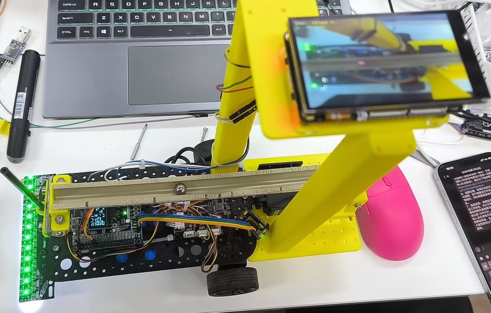

个人简介
就读于深圳信息职业技术学院，具备软硬结合的嵌入式系统项目经验。 熟悉电路板全流程开发：能够使用嘉立创EDA独立完成原理图绘制与PCB Layout设计， 熟练掌握SMD/DIP元器件的电烙铁与热风枪手工焊接，具备样板装配经验。 能够使用万用表、示波器等仪器进行上电调试与故障排查， 配合软硬件联调验证板级功能。在校期间综合排名班级第 2， 应聘硬件研发实习生岗位。
教育背景
🏅 成绩排名：2/37（班级第 2）
📖 主修课程：程序设计基础、单片机应用技术、数字电子技术、模拟电子技术、电路分析、PCB 设计、Linux 系统编程
专业技能
- • 掌握 51、STM32 系列单片机开发，使用过标准库、HAL 库和寄存器开发，了解 Cortex-M3 内核工作原理
- • 能够使用 C 语言完成嵌入式开发，熟悉常用数据结构、指针、结构体和堆栈内存管理
- • 熟练使用 KeilIDE、VSCode 等开发环境，熟练使用示波器、万用表、逻辑分析仪等调试测试工具
- • 使用过 FreeRTOS 的任务、信号量和事件组等机制，能够进行多任务功能开发与调试
- • 熟练使用 嘉立创EDA（EasyEDA）独立完成原理图绘制与 PCB Layout 设计，具备 4 层板设计经验
- • 熟练使用 Linux 跨平台开发环境，掌握 Git 版本控制，熟悉 Gerrit 代码审核流程与企业协作开发规范
- • 熟练掌握常用通信接口协议：UART、I2C、SPI，能够使用示波器进行波形抓取与信号分析
- • 具备 Arduino、ESP32、STM32 等嵌入式平台开发经验，有完整实物项目成果
项目经历
智能家居网关
2025基于 ESP32 的智能家居网关项目。负责原理图绘制与 PCB Layout 设计， 完成样板手工焊接、装配与上电调试。实现 MQTT 协议通信、Wi-Fi 远程控制、 多传感器数据采集与云平台对接，完成了 OTA 远程升级功能的开发与部署。
车载平衡滚球运动控制系统（2026 电赛 H 题）
2026
2026 年全国大学生电子设计竞赛（TI 杯）H 题项目，3 人团队协作。 设计制作一辆载有平衡滚球运动控制装置的循线小车，沿黑色环形路线行驶的同时， 通过摆杆角度控制机构将凹槽内钢球稳定在指定位置。 负责单片机程序开发与软硬件联调。
基于红外光电模块实现黑线循迹与定点启停，配合按键启动和计时显示装置完成行程计时； 采用摄像头视觉检测钢球在摆杆凹槽中的位置，通过 PID 闭环控制驱动摆杆角度机构， 实现钢球在 ±5cm 范围内的往复移动及行驶过程中的动态稳定（误差≤1cm）； 搭建摆球位置监测图传装置，实时回传钢球运动画面并记录测试视频。